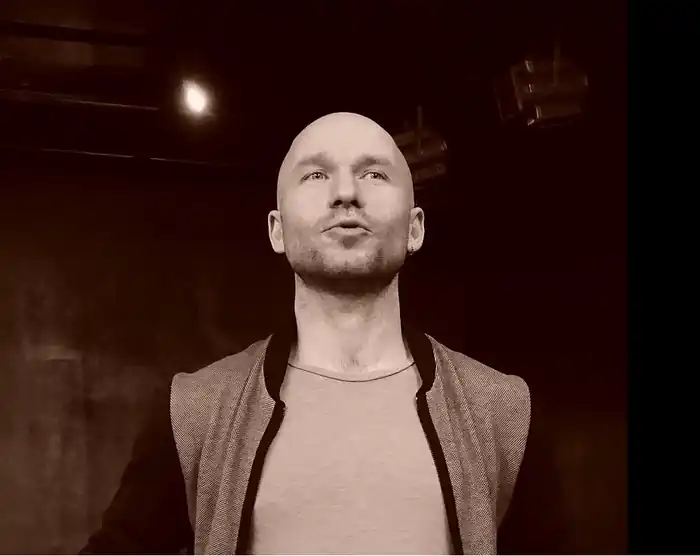

Народився 3 лютого 1980 року у Рівному. Закінчив загальноосвітню та музичну школи. Зростав та розвивався в умовах соцреалізму та двокімнатної квартири. Навчався на історико-соціологічному факультеті Рівненського державного гуманітарного університету, пізніше — у КНУТКіТ ім. Карпенка-Карого.
1999—2001рр. працював помічником режисера театру-студії "Від ліхтаря" при Рівненському міському Палаці дітей та молоді. Пізніше почав грати та написав свою першу драму — "Різниця".
За першою освітою— вчитель всесвітньої історії та основ правознавства, тому викладав у Рівненській ЗОШ № 13. Не без дружньої допомоги створив Молодіжний експериментальний театр Рівного "МЕТР", де режисерував С.Мрожика, В.Бойчука, В.Мастросімоне, К.Хензеля, Ф.Кафку та себе самого. У цій якості та як актор був оцінений на певній кількості аматорських фестивалів. Художній керівник Народного молодіжного театру "Від Ліхтаря" Рівненського міського Палацу дітей та молоді з 2016 р. Член НСПУ (з 2006) та Конфедерації Драматургів України (з 2003). Автор збірки "Клаптикова порода. П'єси" ‒ книга п'яти п'єс, яку він видав у 2006 році. На сьогодні, Артем Вишневський відійшов від написання драм і присвячує своє життя більше режисерській діяльності, створюючи вистави в аматорських театральних колективах Рівного, працює із дітьми. Вперше познайомився із театром та захопився ним ‒ у 19 років, коли потрапив у театр-студію "Від ліхтаря". У студії кожен учасник повинен був підготувати зачин (ескіз п'єси) на 2-3 сторінки, який показував перед заняттям. Так із зачину, у 2001 році, виник і перший твір А. Вишневського ‒ драма абсурду "Різниця", у якій він висвітлив систему влади, що не сприймає інакодумців. Відтоді автор почав писати п'єси. Загалом, у творчому доробку автора, враховуючи "Різницю" ‒ 8 п'єс: "Клаптикова порода" (2003 р.), що також була створена із зачину; політична вистава "Суд" (2003 р.), у співавторстві із Тарасом Обоїстою; "Ляпас на згадку" (2004 р.), де драматург критично зображує суспільство, у якому шанують гроші, зв'язки і посади, а не честь і справедливість; "Про потяг, валізи, мотлох і дещо більше" (2005 р.) ‒ химерна історія про двох героїв без Імен; лялькова містерія, казка ‒ "Козак Мамай і ключі від Раю" (2007 рік). За словами Артема Вишневського, коли він писав ці п'єси, то не дуже розумів світу людей, тому тут переважають казкові сюжети, у деякій мірі навіть ірреальність. А от уже драма "Хлопці Кет" (2015 р.), що розповідає про підлітків, які стоять на порозі дорослого життя, та п'єса 18+ "Про чотирьох відсутніх" (2018 р.), що показує життя чотирьох людей, які намагаються знайти бажане ‒ висвітлюють реальне життя, зі своїми труднощами, проблемами, радощами. Також важливим здобутком автора є збірка "Клаптикова порода" ‒ книга п'яти п'єс, яку він видав у 2006 році. Вищезгадані твори ставили у аматорських театрах Рівного, студентських гуртках та у театрі "Калейдоскоп", у Тернополі.